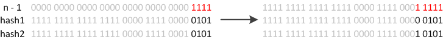

一、概述
从本文你可以学习到：
- 什么时候会使用HashMap？他有什么特点？
- 你知道HashMap的工作原理吗？
- 你知道get和put的原理吗？equals()和hashCode()的都有什么作用？
- 你知道hash的实现吗？为什么要这样实现？
- 如果HashMap的大小超过了负载因子(load factor)定义的容量，怎么办？
当我们执行下面的操作时：
HashMap<String, Integer> map = new HashMap<String, Integer>();
map.put("语文", 1);
map.put("数学", 2);
map.put("英语", 3);
map.put("历史", 4);
map.put("政治", 5);
map.put("地理", 6);
map.put("生物", 7);
map.put("化学", 8);
for(Entry<String, Integer> entry : map.entrySet()) {
System.out.println(entry.getKey() + ": " + entry.getValue());
}
运行结果是
政治: 5
生物: 7
历史: 4
数学: 2
化学: 8
语文: 1
英语: 3
地理: 6
发生了什么呢？下面是一个大致的结构，希望我们对HashMap的结构有一个感性的认识：
在官方文档中是这样描述HashMap的：
Hash table basedimplementation of the Map interface. This implementation provides all of the optional map operations, and permits null values and the null key. (The HashMap class is roughly equivalent to Hashtable, except that it isunsynchronizedandpermits nulls.) This class makes no guarantees as to the order of the map; in particular, it does not guarantee that the order will remain constant over time.
几个关键的信息：基于Map接口实现、允许null键/值、非同步、不保证有序(比如插入的顺序)、也不保证序不随时间变化。
二、两个重要的参数
在HashMap中有两个很重要的参数，容量(Capacity)和负载因子(Load factor)
- Initial capacity The capacity is the number of buckets in the hash table, The initial capacity is simply the capacity at the time the hash table is created.
- Load factor The load factor is a measure of how full the hash table is allowed to get before its capacity is automatically increased.
简单的说，Capacity就是bucket的大小，Load factor就是bucket填满程度的最大比例。如果对迭代性能要求很高的话，不要把capacity设置过大，也不要把load factor设置过小。当bucket中的entries的数目大于capacity*load factor时就需要调整bucket的大小为当前的2倍。
三、put函数的实现
put函数大致的思路为：
- 对key的hashCode()做hash，然后再计算index;
- 如果没碰撞直接放到bucket里；
- 如果碰撞了，以链表的形式存在buckets后；
- 如果碰撞导致链表过长(大于等于
TREEIFY_THRESHOLD)，就把链表转换成红黑树； - 如果节点已经存在就替换old value(保证key的唯一性)
- 如果bucket满了(超过
load factor*current capacity)，就要resize。
具体代码的实现如下：
public V put(K key, V value) {
// 对key的hashCode()做hash
return putVal(hash(key), key, value, false, true);
}
final V putVal(int hash, K key, V value, boolean onlyIfAbsent,
boolean evict) {
Node<K,V>[] tab; Node<K,V> p; int n, i;
// tab为空则创建
if ((tab = table) == null || (n = tab.length) == 0)
n = (tab = resize()).length;
// 计算index，并对null做处理
if ((p = tab[i = (n - 1) & hash]) == null)
tab[i] = newNode(hash, key, value, null);
else {
Node<K,V> e; K k;
// 节点存在
if (p.hash == hash &&
((k = p.key) == key || (key != null && key.equals(k))))
e = p;
// 该链为树
else if (p instanceof TreeNode)
e = ((TreeNode<K,V>)p).putTreeVal(this, tab, hash, key, value);
// 该链为链表
else {
for (int binCount = 0; ; ++binCount) {
if ((e = p.next) == null) {
p.next = newNode(hash, key, value, null);
if (binCount >= TREEIFY_THRESHOLD - 1) // -1 for 1st
treeifyBin(tab, hash);
break;
}
if (e.hash == hash &&
((k = e.key) == key || (key != null && key.equals(k))))
break;
p = e;
}
}
// 写入
if (e != null) { // existing mapping for key
V oldValue = e.value;
if (!onlyIfAbsent || oldValue == null)
e.value = value;
afterNodeAccess(e);
return oldValue;
}
}
++modCount;
// 超过load factor*current capacity，resize
if (++size > threshold)
resize();
afterNodeInsertion(evict);
return null;
}
四、get函数的实现
在理解了put之后，get就很简单了。大致思路如下：
- bucket里的第一个节点，直接命中；
如果有冲突，则通过key.equals(k)去查找对应的entry
若为树，则在树中通过key.equals(k)查找，O(logn)；
若为链表，则在链表中通过key.equals(k)查找，O(n)。
具体代码的实现如下：
public V get(Object key) {
Node<K,V> e;
return (e = getNode(hash(key), key)) == null ? null : e.value;
}
final Node<K,V> getNode(int hash, Object key) {
Node<K,V>[] tab; Node<K,V> first, e; int n; K k;
if ((tab = table) != null && (n = tab.length) > 0 &&
(first = tab[(n - 1) & hash]) != null) {
// 直接命中
if (first.hash == hash && // always check first node
((k = first.key) == key || (key != null && key.equals(k))))
return first;
// 未命中
if ((e = first.next) != null) {
// 在树中get
if (first instanceof TreeNode)
return ((TreeNode<K,V>)first).getTreeNode(hash, key);
// 在链表中get
do {
if (e.hash == hash &&
((k = e.key) == key || (key != null && key.equals(k))))
return e;
} while ((e = e.next) != null);
}
}
return null;
}
五、hash函数的实现
在get和put的过程中，计算下标时，先对hashCode进行hash操作，然后再通过hash值进一步计算下标，如下图所示：
在对hashCode()计算hash时具体实现是这样的：
static final int hash(Object key) {
int h;
return (key == null) ? 0 : (h = key.hashCode()) ^ (h >>> 16);
}
可以看到这个函数大概的作用就是：高16bit不变，低16bit和高16bit做了一个异或。其中代码注释是这样写的：
Computes key.hashCode() and spreads (XORs) higher bits of hash to lower. Because the table uses power-of-two masking, sets of hashes that vary only in bits above the current mask will always collide. (Among known examples are sets of Float keys holding consecutive whole numbers in small tables.) So we apply a transform that spreads the impact of higher bits downward. There is a tradeoff betweenspeed, utility, and qualityof bit-spreading. Because many common sets of hashes are alreadyreasonably distributed(so don’t benefit from spreading), and becausewe use trees to handle large sets of collisions in bins, we just XOR some shifted bits in the cheapest possible way to reduce systematic lossage, as well as to incorporate impact of the highest bits that would otherwise never be used in index calculations because of table bounds.
在设计hash函数时，因为目前的table长度n为2的幂，而计算下标的时候，是这样实现的(使用&位操作，而非%求余)：
(n - 1) & hash
设计者认为这方法很容易发生碰撞。为什么这么说呢？不妨思考一下，在n - 1为15(0x1111)时，其实散列真正生效的只是低4bit的有效位，当然容易碰撞了。
因此，设计者想了一个顾全大局的方法(综合考虑了速度、作用、质量)，就是把高16bit和低16bit异或了一下。设计者还解释到因为现在大多数的hashCode的分布已经很不错了，就算是发生了碰撞也用O(logn)的tree去做了。仅仅异或一下，既减少了系统的开销，也不会造成的因为高位没有参与下标的计算(table长度比较小时)，从而引起的碰撞。
如果还是产生了频繁的碰撞，会发生什么问题呢？作者注释说，他们使用树来处理频繁的碰撞(we use trees to handle large sets of collisions in bins)，在JEP-180中，描述了这个问题：
Improve the performance of java.util.HashMap under high hash-collision conditions byusing balanced trees rather than linked lists to store map entries. Implement the same improvement in the LinkedHashMap class.
之前已经提过，在获取HashMap的元素时，基本分两步：
- 首先根据hashCode()做hash，然后确定bucket的index；
- 如果bucket的节点的key不是我们需要的，则通过keys.equals()在链中找。
在Java 8之前的实现中是用链表解决冲突的，在产生碰撞的情况下，进行get时，两步的时间复杂度是O(1)+O(n)。因此，当碰撞很厉害的时候n很大，O(n)的速度显然是影响速度的。
因此在Java 8中，利用红黑树替换链表，这样复杂度就变成了O(1)+O(logn)了，这样在n很大的时候，能够比较理想的解决这个问题，在Java 8：HashMap的性能提升一文中有性能测试的结果。
六、RESIZE的实现
当put时，如果发现目前的bucket占用程度已经超过了Load Factor所希望的比例，那么就会发生resize。在resize的过程，简单的说就是把bucket扩充为2倍，之后重新计算index，把节点再放到新的bucket中。resize的注释是这样描述的：
Initializes or doubles table size. If null, allocates in accord with initial capacity target held in field threshold. Otherwise, because we are using power-of-two expansion, the elements from each bin must eitherstay at same index, ormove with a power of two offsetin the new table.
大致意思就是说，当超过限制的时候会resize，然而又因为我们使用的是2次幂的扩展(指长度扩为原来2倍)，所以，元素的位置要么是在原位置，要么是在原位置再移动2次幂的位置。
怎么理解呢？例如我们从16扩展为32时，具体的变化如下所示：

因此元素在重新计算hash之后，因为n变为2倍，那么n-1的mask范围在高位多1bit(红色)，因此新的index就会发生这样的变化：
因此，我们在扩充HashMap的时候，不需要重新计算hash，只需要看看原来的hash值新增的那个bit是1还是0就好了，是0的话索引没变，是1的话索引变成“原索引+oldCap”。可以看看下图为16扩充为32的resize示意图：
这个设计确实非常的巧妙，既省去了重新计算hash值的时间，而且同时，由于新增的1bit是0还是1可以认为是随机的，因此resize的过程，均匀的把之前的冲突的节点分散到新的bucket了。
下面是代码的具体实现：
final Node<K,V>[] resize() {
Node<K,V>[] oldTab = table;
int oldCap = (oldTab == null) ? 0 : oldTab.length;
int oldThr = threshold;
int newCap, newThr = 0;
if (oldCap > 0) {
// 超过最大值就不再扩充了，就只好随你碰撞去吧
if (oldCap >= MAXIMUM_CAPACITY) {
threshold = Integer.MAX_VALUE;
return oldTab;
}
// 没超过最大值，就扩充为原来的2倍
else if ((newCap = oldCap << 1) < MAXIMUM_CAPACITY &&
oldCap >= DEFAULT_INITIAL_CAPACITY)
newThr = oldThr << 1; // double threshold
}
else if (oldThr > 0) // initial capacity was placed in threshold
newCap = oldThr;
else { // zero initial threshold signifies using defaults
newCap = DEFAULT_INITIAL_CAPACITY;
newThr = (int)(DEFAULT_LOAD_FACTOR * DEFAULT_INITIAL_CAPACITY);
}
// 计算新的resize上限
if (newThr == 0) {
float ft = (float)newCap * loadFactor;
newThr = (newCap < MAXIMUM_CAPACITY && ft < (float)MAXIMUM_CAPACITY ?
(int)ft : Integer.MAX_VALUE);
}
threshold = newThr;
@SuppressWarnings({"rawtypes","unchecked"})
Node<K,V>[] newTab = (Node<K,V>[])new Node[newCap];
table = newTab;
if (oldTab != null) {
// 把每个bucket都移动到新的buckets中
for (int j = 0; j < oldCap; ++j) {
Node<K,V> e;
if ((e = oldTab[j]) != null) {
oldTab[j] = null;
if (e.next == null)
newTab[e.hash & (newCap - 1)] = e;
else if (e instanceof TreeNode)
((TreeNode<K,V>)e).split(this, newTab, j, oldCap);
else { // preserve order
Node<K,V> loHead = null, loTail = null;
Node<K,V> hiHead = null, hiTail = null;
Node<K,V> next;
do {
next = e.next;
// 原索引
if ((e.hash & oldCap) == 0) {
if (loTail == null)
loHead = e;
else
loTail.next = e;
loTail = e;
}
// 原索引+oldCap
else {
if (hiTail == null)
hiHead = e;
else
hiTail.next = e;
hiTail = e;
}
} while ((e = next) != null);
// 原索引放到bucket里
if (loTail != null) {
loTail.next = null;
newTab[j] = loHead;
}
// 原索引+oldCap放到bucket里
if (hiTail != null) {
hiTail.next = null;
newTab[j + oldCap] = hiHead;
}
}
}
}
}
return newTab;
}
七、总结
我们现在可以回答开始的几个问题，加深对HashMap的理解：
1. 什么时候会使用HashMap？他有什么特点？
是基于Map接口的实现，存储键值对时，它可以接收null的键值，是非同步的，HashMap存储着Entry(hash, key, value, next)对象。
2. 你知道HashMap的工作原理吗？
通过hash的方法，通过put和get存储和获取对象。存储对象时，我们将K/V传给put方法时，它调用hashCode计算hash从而得到bucket位置，进一步存储，HashMap会根据当前bucket的占用情况自动调整容量(超过Load Facotr则resize为原来的2倍)。获取对象时，我们将K传给get，它调用hashCode计算hash从而得到bucket位置，并进一步调用equals()方法确定键值对。如果发生碰撞的时候，Hashmap通过链表将产生碰撞冲突的元素组织起来，在Java 8中，如果一个bucket中碰撞冲突的元素超过某个限制(默认是8)，则使用红黑树来替换链表，从而提高速度。
3. 你知道get和put的原理吗？equals()和hashCode()的都有什么作用？
通过对key的hashCode()进行hashing，并计算下标( (n-1) & hash)，从而获得buckets的位置。如果产生碰撞，则利用key.equals()方法去链表或树中去查找对应的节点
4. 你知道hash的实现吗？为什么要这样实现？
在Java 1.8的实现中，是通过hashCode()的高16位异或低16位实现的：(h = k.hashCode()) ^ (h >>> 16)，主要是从速度、功效、质量来考虑的，这么做可以在bucket的n比较小的时候，也能保证考虑到高低bit都参与到hash的计算中，同时不会有太大的开销。
5. 如果HashMap的大小超过了负载因子(load factor)定义的容量，怎么办？
如果超过了负载因子(默认0.75)，则会重新resize一个原来长度两倍的HashMap，并且重新调用hash方法。